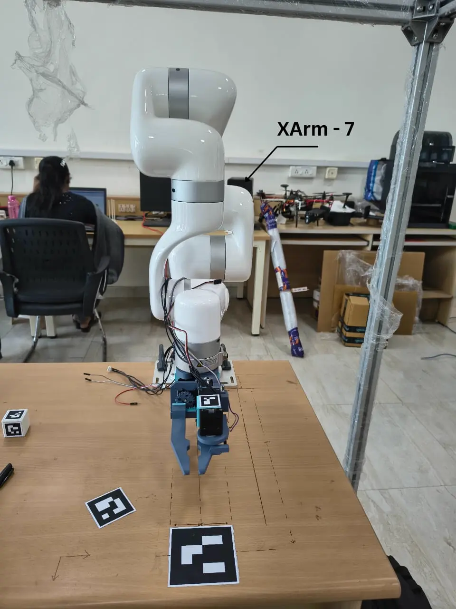

02 / 06
Robots I've built, systems I've designed, code I'm proud of.
Designed a multi-functional gripper leveraging Latch-Mediated Spring Actuation (LaMSA) for high-impact targeted striking, integrated with custom system identification and RMA-based online control adaptation.

End-to-end Sudoku solver using a digit recognizer trained on real printed Sudoku images — not MNIST. Handles varied fonts, print quality, and perspective distortion.
Modeling a pose tracker for an AMR towing a trolley — without explicitly modeling the trolley's dynamics. Augmenting the base estimator with a learned residual (GPR / MLP).
Augmenting Frenet-frame Model Predictive Control with trailer kinematics, move blocking, and soft jackknife barriers to autonomously reverse an articulated tractor-trolley system using CasADi and Acados.
Classifying navigable floor corridors for warehouse robots using Go-Net. Overcoming severe fisheye-to-pinhole camera modality gaps via custom data engineering and ExAug-Nav experience augmentation.
on the backlog